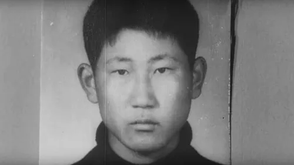
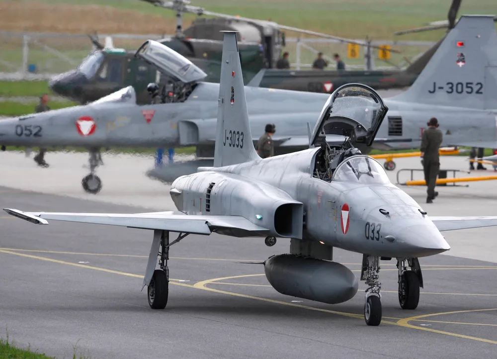

KAL F27 Hijacking Attempt
January 23rd, 1971
Korean Airlines 139
From Sokcho
To Gimpo
outline
사건명
대한항공 F27기 납북 미수 사건
납치 항공편
대한항공 842편
출발지
속초
목적지
김포국제공항
사건 발생지
강원도 홍천군 상공
범인
김상태
info
1971년 1월 23일, 오후 1시 7분 대한항공 포커 27 여객기가 속초공항에서 이륙했다. 당시 대한항공 YS-11기 납북 사건으로 인해서 비행기 보안이 강화되었지만 당시 속초공항
금속탐지기가 구형이라 비닐이나 기름종이 등으로 싸면 찾아내지 못했다고 한다. 또한 검문관이 소지품 검사를 제대로 하지 않았다.
에서 미흡한 검사로 인해 이번 사건의 범인인 김상태

당시 22세 무직이었으며 추측에 따르면 납북에 성공한 공작원들이 엄청난 대접을 받았다는 기사를 보고 사건을 일으켰을 가능성이 높다.
는 폭탄을 무사히 가지고 탑승했다. 이륙한 지 27분이 지난 뒤 홍천 상공에서 폭탄 2개가 폭팔해 기체에 20cm 가량의 큰 구멍이 나고 잠가 놓았던 조종실 문이 부서졌다. 이후 김상태는 조종사들에게 남은 폭탄 2개를 들고 협박하며 북으로 갈 것을 요구했다. 기장은 납치범의 협박에 순응하는 척 강원도 고성군에 비상착륙
화진포에 비상착륙하려 했지만 범인인 김상태가 하필이면 고성군이 고향이었다.
하려 했지만 납치범이 이를 알아차렸고 실패로 돌아갔다. 기장은 무전을 통해 비행기 납치되었다는 사실을 알렸고 이후 대한민국 공군이 F-5A

기장이 해당 전투기를 북한군의 전투기가 마중 나왔다며 속였다. 또한 당시 국군의 신형 전투기라 일반인들에게는 생소한 외형이었다.
2대를 긴급 출격시켰다. 이후 기내보안관 및 조종사들의 기지로 인해 권총으로 범인을 제압했다. 범인은 사살되었고 항공기가 공중분해될 뻔 했지만 비행기는 고성군 바닷가에 동체착륙으로 불시착하였다.
금속탐지기가 구형이라 비닐이나 기름종이 등으로 싸면 찾아내지 못했다고 한다. 또한 검문관이 소지품 검사를 제대로 하지 않았다.

당시 22세 무직이었으며 추측에 따르면 납북에 성공한 공작원들이 엄청난 대접을 받았다는 기사를 보고 사건을 일으켰을 가능성이 높다.
화진포에 비상착륙하려 했지만 범인인 김상태가 하필이면 고성군이 고향이었다.

기장이 해당 전투기를 북한군의 전투기가 마중 나왔다며 속였다. 또한 당시 국군의 신형 전투기라 일반인들에게는 생소한 외형이었다.